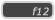
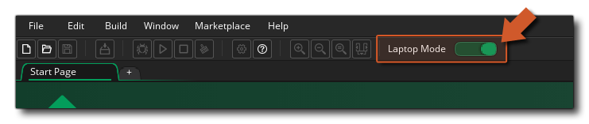

GameMaker Studio 2 的IDE接受鼠标和键盘输入，并且你可以选择一个或另一个或者两者都用来实现更多操作。通常你可以点击鼠标左键 选择任何东西，
选择任何东西， /使用
/使用 +
+  选中多个项目，按住
选中多个项目，按住  拖拽项目到不同的停靠栏或者工作区，以及这个
拖拽项目到不同的停靠栏或者工作区，以及这个  可以打开特定的右键菜单。请注意，如果你在macOS系统上运行GameMaker Studio 2 ，并且使用单按钮鼠标，请使用
可以打开特定的右键菜单。请注意，如果你在macOS系统上运行GameMaker Studio 2 ，并且使用单按钮鼠标，请使用  +
+  获取鼠标右键单击
获取鼠标右键单击  。
。
还有很多可以用于在不同工作区元素及资源编辑器间来回导航的键盘快捷键，并且你还可以在这里找到快捷键完整列表，但我们还是会在这里先看几个比较重要的。
/
+ "Z"：这将在绝大多数编辑器中撤销之前的动作。你也可以进行多重撤销，所以你可以多按几次来“回滚”改动。
: 这将打开 工作区概述 窗口，该窗口用于在不同工作区中打开的项之间快速导航。
：它能打开本帮助手册。请注意，当使用DnD™按钮或GML代码，你也可以选择一个动作或一个函数（再或者是一个关键字或者是别的什么东西），然后按下
，在本帮助手册中打开相关页面。
- ：它能够折叠或展开IDE中所有停靠栏窗口。


除了这些输入方式以外，还有一些是对于触控笔设备的有限支持，并且也是一个专门给那些使用平板或笔记本电脑工作的人的模式。两者都会在下文进行阐述：
如果你正在一个笔记本电脑上使用GameMaker Studio 2，那么在IDE的顶端会有一个选项为笔记本模式（Laptop Mode）： 
这个默认是开着的，但是你也可以根据你的喜好把这个按钮切换为关闭状态。IDE中的笔记本模式融合了一些工具使得当你使用触控板的时候能够拥有更好的体验，简化了三个主要的鼠标交互：平移、缩放和滚动。有两个控制键用于这些操作： 左
。当笔记本模式打开时， 左
最后我们这里要说的就是GameMaker Studio 2的IDE还有一些对于触控屏的支持。在所有操作系统上，你都可以使用触摸屏在主工作区中单击和拖动项目，我们支持两点同步触控，两指同时点击将执行右键单击。请注意，在Windows 8或更高的系统上，GameMaker Studio 2 IDE还会支持触控笔设备。